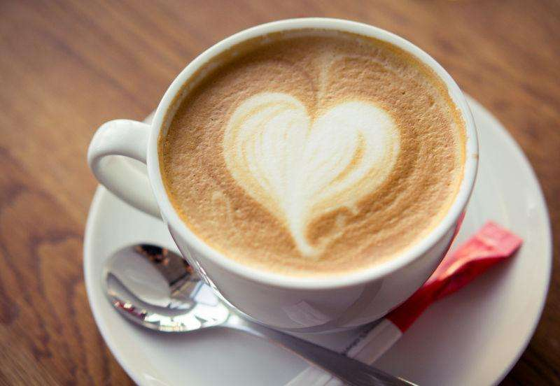
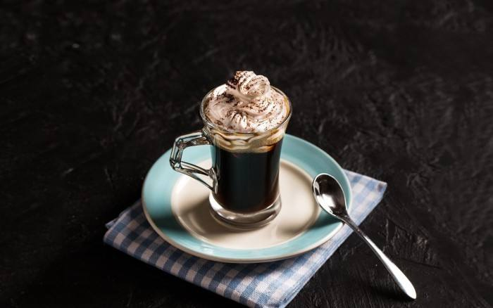

Welcome to
Coffee House
By SHGY
拿铁咖啡 (Caffe Latte)

拿铁是最为国人熟悉的意式咖啡品项，它是在沉厚浓郁的Espresso中加进等比例,甚至更多牛奶的花式咖啡。有了牛奶的温润调味,让原本甘苦的咖啡变得柔滑香甜，甘美浓郁,就连不习惯喝咖啡的人,也难敌拿铁芳美的滋味。
和卡布奇诺一样,拿铁因为含有多量的牛奶而适合在早晨饮用。意大利人也喜欢拿它来暖胃,搭配早餐用。意大利人早晨的厨房里，照得到阳光的炉子上通常会同时煮着咖啡和牛奶。喝拿铁的意大利人，与其说他们喜欢意大利浓缩咖啡，不如说他们喜欢牛奶，也只有Espresso才能给普普通通的牛奶带来让人难以忘怀的味道。
【意大利式拿铁咖啡】需要一小杯Espresso和一杯牛奶(150～200毫升)，拿铁咖啡中牛奶多而咖啡少，这与Cappuccino有很大不同。拿铁咖啡做法极其简单，就是在刚刚做好的意大利浓缩咖啡中倒入接近沸腾的牛奶。事实上，加入多少牛奶没有一定之规，可依个人口味自由调配。 如果在热牛奶上再加上一些打成泡沫的冷牛奶，就成了一杯【美式拿铁咖啡】。星巴克的美式拿铁就是用这种方法制成的，底部是意大利浓缩咖啡，中间是加热到65～75℃的牛奶，最后是一层不超过半厘米的冷的牛奶泡沫。 如果不放热牛奶，而直接在意大利浓缩咖啡上装饰两大勺牛奶泡沫，就成了被意大利人叫做Espresso Macchiato的【玛奇哈朵咖啡】。
维也纳咖啡 （Viennese）

此乃奥地利最著名的咖啡，是一个名叫爱因•舒伯纳的马车夫发明的，也许是由于这个原因，今天，人们偶尔也会称维也纳咖啡为“单头马车”。
以浓浓的鲜奶油和巧克力的甜美风味迷倒全球人士。雪白的鲜奶油上，洒落五色缤纷七彩米，扮相非常漂亮。隔着甜甜的巧克力糖浆、冰凉的鲜奶油啜饮滚烫的热咖啡，更是别有风味！
维也纳咖啡是慵懒的周末或是闲适的午后最好的伴侣，喝上一杯维也纳咖啡就是为自己创造了一个绝好的放松身心的机会。但是，由于含有太多糖分和脂肪，维也纳咖啡并不适合于减肥者。